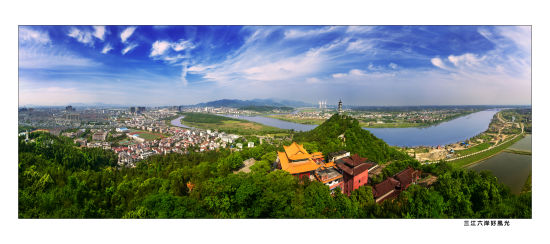

我的家乡兰溪
溪以兰名,邑以溪名---兰溪
西门城楼，悦济浮桥，城南古巷...
兰溪市位于浙江省中西部，地处钱塘江中游，金衢盆地北缘，地理坐标为北纬2 9°1'20"-2 9°27'30"，东经119°13'30"-119°53'50"，东西长67.5公里，南北宽38.5公里，距金华市区20.5公里，杭州132公里，总面积1313平方公里，2013年末户籍总人口66.67万人。
光绪《兰溪县志》开宗明义载，"邑虽褊小而实当四冲。踞杭严之上游，职衢婺之门钥，南蔽瓯括，北捍徽歙。定职方者，谓为浙东之要区，洵不诬也。"婺、衢两江在兰阴山麓汇成兰江，北行至梅城汇新安江而称富春江，继续北行，至富阳以下，称钱塘江。兰溪自古有"三江之汇"，"六水之腰"，"七省通衢"之称。
市境东南邻金华市金东区、婺城区，西南接龙游县，西北毗连建德市，东北与浦江县、义乌市交界。兰溪市内水系属钱塘江水系，主要有三江(衢江、金华江、兰江)五溪(梅溪、甘溪、赤溪、游埠溪、马达溪)组成。市树市花分别为樟树和兰花。